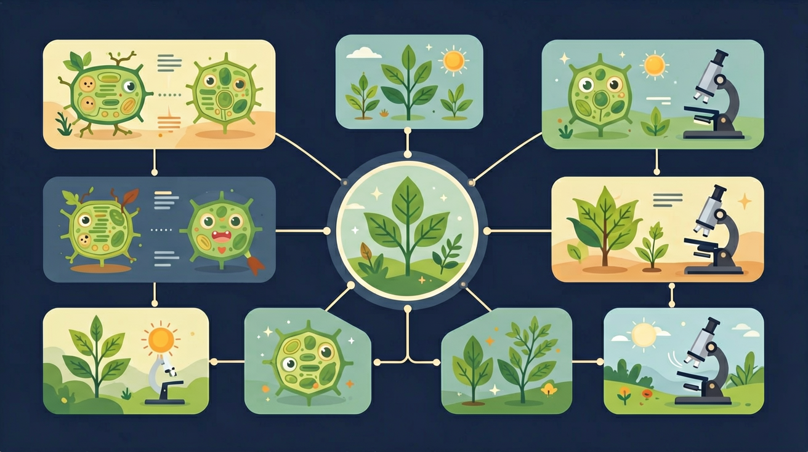

探索光照、温度、水分如何影响生物生存，理解生物与环境的相互关系

🎯 能说出生态因素的3个分类
🎯 能判断具体环境中的主导生态因素
🎯 能分析人类活动对生态系统的影响
生物生活在自然界中，阳光、温度、水分、土壤等各种条件时刻影响着它们的生存与分布。
但是，同样的光照下，有的植物茁壮成长，有的却枯萎死亡。为什么不同生物对同一因素的反应差异这么大？
通过本课学习，你将掌握非生物因素与生物因素的概念，理解生物对环境的适应，并学会分析生态因素对生物的影响。
光照、温度、水分、土壤等
种内关系与种间关系
长期进化形成的适应性
生物与环境相互作用
❓ 为什么沙漠里很少看到青蛙？
❓ 为什么同一片森林里不同地方植物长得不一样？
❓ 人类活动算不算生态因素？
学完这一课，这些问题你都能自信地回答。
下列属于生物因素的是？
苔藓常生长在？
非生物因素是指光照、温度、水分、空气、土壤等影响生物生活的非生命物质。
植物光合作用的能量来源；影响动物繁殖节律
影响酶活性和代谢速率；决定生物分布范围
生命活动的物质基础；决定干旱/湿润区物种
提供无机盐和水分；影响植物根系发育
下方动画模拟了不同光照强度下植物的生长状态。观察阴生植物和阳生植物的差异。
生物因素是指同种或不同种生物之间的相互作用关系。
同种个体争夺食物、空间（如狼群竞争）
同种个体合作（如蜜蜂分工协作）
一种生物以另一种为食（如狮子捕食羚羊）
两种生物互相受益（如花与蜜蜂）
生物经过长期自然选择，形成了与环境相适应的形态结构和生活习性。
将生态因素拆解为生物因素（种内/种间）与非生物因素（光温水气土）
非生物因素通过影响生物生理活动（如光合作用）产生作用
种内斗争（同物种争资源）vs 种间竞争（不同物种争资源）
观察校园花坛：向阳处与背阴处植物种类差异
解释'橘生淮南则为橘，生于淮北则为枳'的生态学原理
将下方因素拖入对应类别
关于生态因素的正确理解是？
设计实验验证苔藓覆盖率与光照强度的关系
先独立作答，再点选项查看对错与错因。
东侧植物茂盛而昆虫较少，主要受哪种因素影响？
雨后积水坑的孑孓消失，最可能的原因是？
下列哪项属于生物因素对苔藓分布的影响？
蚯蚓通过____活动改善土壤结构，这属于生物____环境的现象。
答案：掘穴 影响
需体现生物行为对环境产生的改变作用
同一区域内光照强度不同导致植物分布差异，说明非生物因素具有____特性。
答案：不均匀分布
强调生态因素的空间异质性
✅ 互利共生（如蜜蜂传粉）对生物有利
💡 忽视生物间正向关系
✅ 极地温度低但全年太阳辐射总量可能很大
💡 物理概念迁移错误
口诀：生态因素两兄弟，生物非生物要记清，阳光水土加竞争
类比：像班级座位表：前排（光照强）适合高个子，后排（荫蔽）适合怕晒同学
生态因素分两类：非生物因素（光、温度、水、土壤等）和生物因素（捕食、竞争、共生、寄生等）。它们共同决定生物的分布与数量。
🎯 核心原因：生态位不同。同样的光照、同样的温度，不同物种对环境的"需求范围"（生态位）不同——有的喜光、有的耐阴；有的耐寒、有的喜温。这来自长期自然选择形成的特定适应。
🔄 适应是相对的：仙人掌叶变刺是对干旱的适应，但把它放进雨林反而劣势。环境在变，生物与环境的"相互选择"也一直在变（协同进化）。
🧠 推论：分析一个生态现象，要先分清是"非生物因素"还是"生物因素"在起作用，再看具体物种的适应范围。
生态因素 = 非生物因素 + 生物因素
非生物因素：光、温、水、土（助记："光温水土"）
生物因素：种内（同种间）+ 种间（不同种间）
生物对生态因素具有适应性，这是自然选择的结果。
（中考题）稻田除草是为了减少？
（迁移题）超市冷链运输水果主要控制？
（综合题）下列人类活动属于生物因素影响的是？